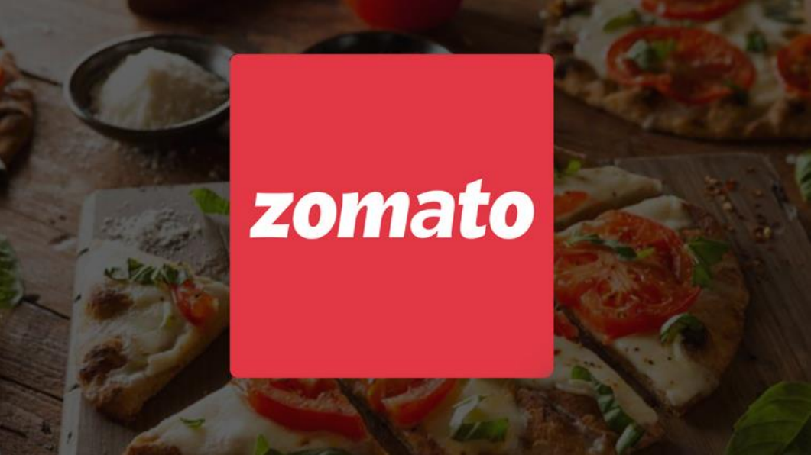
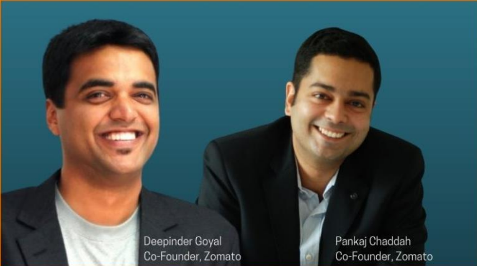

Zomato: From Menus to Millions – Redefining Food-Tech in India
Published on: August 25, 2025
“Fresh out of the kitchen, right to your doorstep.” – Zomato’s simple promise that transformed Indian dining.
Zomato’s journey is one of vision, technology, and persistence. Founded by Deepinder Goyal and Pankaj Chaddah in 2008, this food-tech startup began as FoodieBay, a digital restaurant menu listing platform. Today, it’s a household name serving millions across India and beyond — a story of how one startup redefined convenience and culinary experiences for an entire generation.
About Zomato
| Formerly | FoodieBay (2008–2010) |
|---|---|
| Type | Online Food Ordering |
| Founded | July 10, 2008 (17 years ago) |
| Founders | Deepinder Goyal, Pankaj Chaddah |
| Headquarters | Gurgaon, Haryana, India |
| Industry | Food-tech / E-commerce |
| URL | www.zomato.com |

Founders & Leadership
Deepinder Goyal, an IIT Delhi graduate and former Bain & Co. consultant, founded Zomato after identifying a simple problem — colleagues struggling to find restaurant menus. His persistence turned that idea into a global food-tech leader. Despite his success, Goyal’s humility stands out — he waived his INR 3.5 crore salary (2021–2026) and continues leading Zomato with a long-term vision. He’s also known as a Shark on Shark Tank India Season 3.
Pankaj Chaddah, also from IIT Delhi, played a crucial role in shaping Zomato’s culture and operations. After a decade, he exited in 2018 and went on to co-found Shyft (formerly Mindhouse), focusing on wellness and mindfulness. His time at Zomato is remembered for his leadership during critical transitions.
Challenges Faced by Zomato
Zomato’s journey wasn’t smooth sailing — it faced multiple challenges that tested its adaptability and resolve:
- Restaurant Onboarding: Scaling listings across major cities required immense operational coordination.
- Commission Disputes: High commissions triggered the #Logout campaign by restaurants.
- Financial Setbacks: Blinkit acquisition and market volatility affected share prices.
- Regulatory Scrutiny: CCI investigated Zomato over alleged unfair practices.
- Cybersecurity: A 2017 breach led to enhanced data protection protocols.
- Public Controversies: Campaigns like #RejectZomato tested public trust.
- Operational Restructuring: Streamlining operations ensured sustainability.
Zomato’s Funding Journey
Zomato’s funding story mirrors its growth story — strategic, disciplined, and forward-looking:
- Start Small, Think Big: What began as digitizing menus evolved into India’s largest food delivery platform.
- Build Investor Trust: Early backing from Info Edge built credibility and opened doors for global investors.
- Diversify and Adapt: From restaurant listings to delivery to quick commerce (Blinkit).
- Strategic Use of Capital: Each funding round supported purposeful expansion and acquisitions.
- Manage Growth and Risk: Navigating controversies while sustaining investor confidence.
- Global Mindset, Local Execution: Zomato’s international presence grew while catering to local preferences.
“Dream big, stay agile, earn trust, and keep innovating.”
Growth & Expansion: From Delhi NCR to the World
Zomato’s evolution offers key takeaways for aspiring founders:
- Start Local, Expand Smartly: Dominated Delhi NCR before going national and global.
- Leverage Technology Early: Early adoption of mobile apps fueled rapid user growth.
- Think Global, Act Strategically: Entered 24+ countries by 2012.
- Profitability Matters: Achieved profitability in several markets by 2017.
- Set Milestones: From 3 million monthly orders to over 1 billion by 2021.
- Build a Strong Ecosystem: 226,000 restaurant partners and 352,000 delivery associates.
- Scale Broadly, Serve Deeply: Serving 800+ cities and 58 million customers in FY23.
Lessons Every Entrepreneur Should Learn from Zomato
- Solve Real Problems with Technology: Use tech to simplify inefficiencies — like menu access and delivery tracking.
- Adapt to Market Needs: Evolve your offerings with customer expectations.
- Customer Experience Matters: Design seamless, transparent, and reliable experiences.
- Constant Innovation: Keep experimenting — AI, cloud kitchens, premium memberships, hyperlocal strategies.
- Sustainable Growth: Scale wisely with focus on unit economics and financial health.
Conclusion
Zomato’s rise is not just a story of food delivery — it’s a lesson in persistence, innovation, and adaptability. From solving a simple office problem to empowering millions of users and restaurants, Zomato exemplifies the spirit of modern entrepreneurship in India’s digital age.
For every aspiring entrepreneur, Zomato’s journey proves that the right mix of technology, resilience, and purpose can turn a simple idea into a movement.